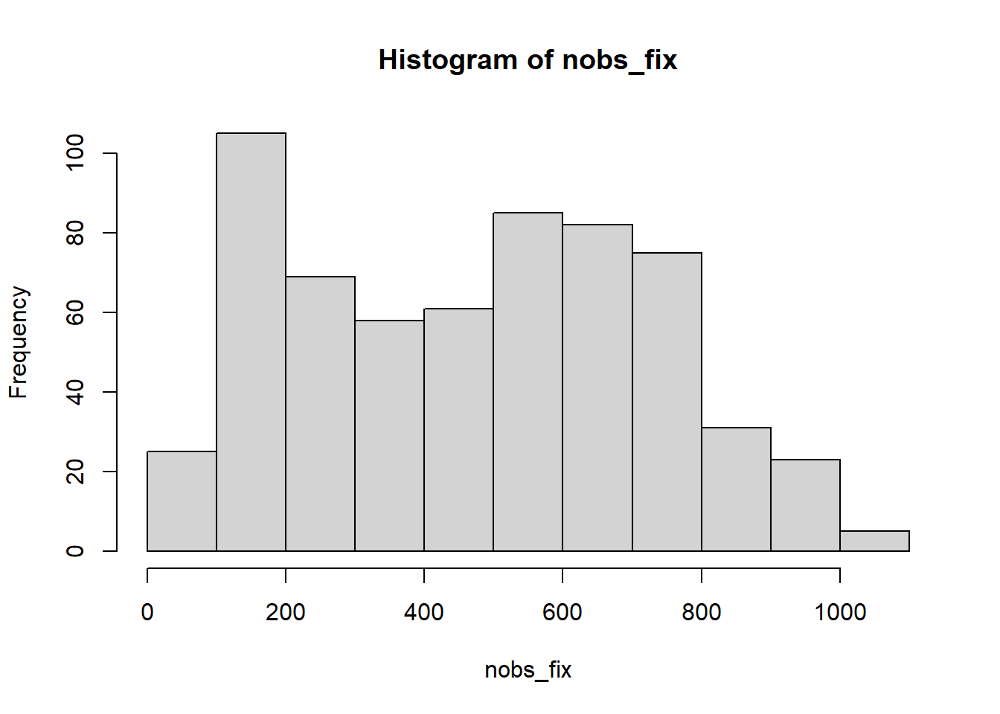

Last updated: 2022-03-01
Checks: 6 1
Knit directory: project_video_salience/
This reproducible R Markdown analysis was created with workflowr (version 1.6.2). The Checks tab describes the reproducibility checks that were applied when the results were created. The Past versions tab lists the development history.
Great! Since the R Markdown file has been committed to the Git repository, you know the exact version of the code that produced these results.
Great job! The global environment was empty. Objects defined in the global environment can affect the analysis in your R Markdown file in unknown ways. For reproduciblity it’s best to always run the code in an empty environment.
The command set.seed(20210113) was run prior to running the code in the R Markdown file. Setting a seed ensures that any results that rely on randomness, e.g. subsampling or permutations, are reproducible.
Great job! Recording the operating system, R version, and package versions is critical for reproducibility.
Nice! There were no cached chunks for this analysis, so you can be confident that you successfully produced the results during this run.
Using absolute paths to the files within your workflowr project makes it difficult for you and others to run your code on a different machine. Change the absolute path(s) below to the suggested relative path(s) to make your code more reproducible.
| absolute | relative |
|---|---|
| C:_video_salience_data | et_data |
| C:_video_salience_salience | stimuli_salience |
| C:/Users/Nico/PowerFolders/project_video_salience/merged_data/ | merged_data |
| C:_video_salience_salience | motion_salience |
Great! You are using Git for version control. Tracking code development and connecting the code version to the results is critical for reproducibility.
The results in this page were generated with repository version 8c0d2cb. See the Past versions tab to see a history of the changes made to the R Markdown and HTML files.
Note that you need to be careful to ensure that all relevant files for the analysis have been committed to Git prior to generating the results (you can use wflow_publish or wflow_git_commit). workflowr only checks the R Markdown file, but you know if there are other scripts or data files that it depends on. Below is the status of the Git repository when the results were generated:
Ignored files:
Ignored: .Rhistory
Ignored: .Rproj.user/
Ignored: analysis/data_analysis_salience_cache/
Untracked files:
Untracked: .PowerFolder/
Untracked: analysis/Results in unmatched sample.docx
Untracked: code/OLD/
Untracked: code/analysis_salience_130121.R
Untracked: code/analysis_salience_150421.R
Untracked: code/extract_salience_metrics.R
Untracked: code/mean_salience_per_video.R
Untracked: code/preprocessing1_matching_gaze_and_salience_data.R
Untracked: code/preprocessing2_matching_gaze_and_motionsalience_data.R
Untracked: code/preprocessing3_datareduction_adding_additional_data.R
Untracked: code/python_code_salience_extraction/
Untracked: code/sesnory_subgroup_analysis.R
Untracked: data/luminance_data.Rdata
Untracked: data/merged_data/
Untracked: data/motion_salience.Rdata
Untracked: data/perceptual_salience
Untracked: data/perceptual_salience.Rdata
Untracked: data/video_stimuli_scenes.csv
Untracked: desktop.ini
Untracked: manuscript/
Untracked: output/gaze_animate_sample.mp4
Untracked: output/gaze_animate_sample_dollhouse_scene5.mp4
Untracked: output/motion_salience/
Untracked: output/motion_salience_video_pingudoctors_scene0.avi
Untracked: output/salience_video_artist.avi
Untracked: output/stimuli_pics/
Untracked: output/stimuli_salience/
Untracked: output/stimuli_scene/
Untracked: project_init_workflow.R
Unstaged changes:
Modified: code/README.md
Modified: data/README.md
Note that any generated files, e.g. HTML, png, CSS, etc., are not included in this status report because it is ok for generated content to have uncommitted changes.
These are the previous versions of the repository in which changes were made to the R Markdown (analysis/data_preprocessing.Rmd) and HTML (docs/data_preprocessing.html) files. If you’ve configured a remote Git repository (see ?wflow_git_remote), click on the hyperlinks in the table below to view the files as they were in that past version.
| File | Version | Author | Date | Message |
|---|---|---|---|---|
| html | fffe9d1 | nicobast | 2021-09-13 | Build site. |
| Rmd | 4485527 | nicobast | 2021-09-13 | Publish the initial files for myproject |
Raw data is preprocessed. Raw timestamp and oculomotor function data is combined to eye-tracking data sets. Extracted salience information is merged to eye-tracking data sets. This is followed up by an elaborate preprocessing including pupil dilation preprocessing, data reduction to saccade/fixation events, adding area-of-interest-information, oculomotor outlier exclusion, adding demographic and phenotypic and data quality and sensory subgroup and video scene information.
knitr::opts_chunk$set(echo = TRUE)
knitr::opts_chunk$set(eval = FALSE) #do not execute chunks
#TODO: define relative paths
oculomotor_raw_data<-'/home/nico/Documents/EUAIMS_data_ET/' # on linux machine - created by GraFIX at Birbeck
timestamp_raw_data<-'/home/nico/Documents/EUAIMS_data170718/logs' # on linux machine
merged_raw_data<-'/home/nico/Documents/EUAIMS_merged/' #combined oculomotor function + timestamp raw data#required packages
require(parallel) #parallel processing
#require(nlme) #linear mixed models (lme)
#require(ggeffects) #predicted marginalized means
#require(ggplot2)
require(zoo) #na.approx in pd.preprocess.func
#CSV data V1 - fixation identification data but fewer cases
#EVENT DETECTION by GraFIX has been applied
paths.v1<-"/home/nico/Documents/EUAIMS_data_ET/"
data.files.v1<-list.files(path=paths.v1, full.names=TRUE,recursive=T)
id.vec.v1<-substr(data.files.v1,38,49)
rm(paths.v1)
#CSV data -version 2 - find movie and corresponding segment number in log files
paths.log<-"/home/nico/Documents/EUAIMS_data170718/logs"
log.files.v2<-list.files(path=paths.log, full.names=TRUE,recursive=T)
id.vec.v2<-substr(log.files.v2,45,56)
log.files.v2<-log.files.v2[id.vec.v2 %in% id.vec.v1] #select only those that are in version 1
data.files.v1<-data.files.v1[id.vec.v1 %in% substr(log.files.v2,45,56)] #select only those that are in version 2
func.readlog<-function(x){
df<-read.csv(x, header =T, sep=',',dec='.')
seq.number<-c('01','02','03','04','05','06','07','08','09','10','11','12','13','14','15','16','17')
df$order<-paste('segment00',seq.number,sep='')[1:nrow(df)]
return(df)
} #func that reads log file and ads a corresponding segment variable (files are identified by segments)
df.logs.list<-lapply(log.files.v2,func.readlog)
df.logs<-data.frame(do.call('rbind',df.logs.list))
#find start remote time - v2 data
df.logs.start<-lapply(df.logs.list,function(x){x[which.min(x$MovieOnsetETRemoteTime),]})
df.logs.start<-data.frame(do.call('rbind',df.logs.start))
# MERGING FUNCTION ####
func.mergedata<-function(x,y=data.files.v1,z=df.logs.start,v=df.logs.1mov){
#DEBUGING
#x<-data.files.1mov[sample(1:length(data.files.1mov),1)]
#y<-data.files.v1
#z<-df.logs.start
#v<-df.logs.1mov
#DIAGNOSTICS
#get id name
id<-substr(x,44,55)
print(paste(Sys.time(),'start:',analyzed.movie,id))
#READ data v2 (df) and v1 (df2)
df<-read.csv(x, header =T, sep=',',dec='.')
#reduce data - drop unnecessary raw data
df<-df[,-which(names(df) %in% c('TriggerSignal','Left_3D_x','Left_3D_y','Left_3D_z','Right_3D_x','Right_3D_y','Right_3D_z','Left_3D_UCS_x','Left_3D_UCS_y','Left_3D_UCS_z','Right_3D_UCS_x','Right_3D_UCS_y','Right_3D_UCS_z'))]
#change names, so raw data can be identified in merged file
names(df)<-c('RemoteTime',paste('raw',names(df)[-1],sep='.'))
#READ CSV data -version 1 - fixaiton identification but fewer cases
match.file.v1<-grep(pattern=id,y) #search the corresponding file by 'id' in version 1 data
df2<-read.csv(y[match.file.v1], header =T, sep=',',dec='.')
#--> PROBLEM: very slow as whole csv is loaded each time
#find start time and movie start time (in RemoteTime format) for a specific id from df.logs
match.line<-grep(pattern=id,z$ParticipantID) #search the corresponding file by 'id' in version 1 data
start.time<-z$MovieOnsetETRemoteTime[match.line]/1000 #in milliseconds
match.line<-grep(pattern=id,v$ParticipantID) #search the corresponding file by 'id' in version 1 data
start.time.mov<-v$MovieOnsetETRemoteTime[match.line]/1000 #in milliseconds
end.time.mov<-round(v$TrialOffsetTime[match.line]-v$TrialOnsetTime[match.line],3)*1000+start.time.mov
#use these start times to create a absolute timestamp from the relative timestamps in v1 data
byHz<-ifelse(mean(diff(df2$timestamp[1:100]))<6,3.333,8.333) #estimate 1 / sampling rate
if(mean(diff(df2$timestamp[1:100]))>10){byHz<-16.666} #some participants with 60Hz sampling rate
match.ts<-(0:(length(df2$timestamp)-1)*byHz)+start.time #timestamp with milliseconds precision
#match v2 to v1 data and extract only relevant v2 data
df2<-df2[which(match.ts>=start.time.mov&match.ts<=end.time.mov),]
df<-df[which((df$RemoteTime/1000)>=start.time.mov&(df$RemoteTime/1000)<=end.time.mov),]
#correct differences in size
if((nrow(df)&nrow(df2))!=0){
#correct for different sizes
if(nrow(df)!=nrow(df2)){
print(paste(Sys.time(),'unmatched size:',id,nrow(df),nrow(df2)))
k<-pmin(nrow(df),nrow(df2))
df<-df[1:k,]
df2<-df2[1:k,]
}
#add additional variables and form dataframe
ts.local<-0:(nrow(df)-1)*byHz
id<-rep(id,nrow(df))
vid.id<-rep(analyzed.movie,nrow(df))
df<-data.frame(id,vid.id,ts.local,df,df2)
print(paste(Sys.time(),'end:',analyzed.movie,id[1],round(mean(diff(df2$timestamp[1:100])),3)))
return(df)
}
}
#TWO LOOPS: applys func.mergedata ####
#loop one: select one movie and corresponding log files
#loop two: merge v1 and v2 data of selected movie --> and save to file
movies<-unique(df.logs$Video)
#loop one - CSV data -version 2 --> SELECT MOVIE
#analyzed.movie<-unique(df.logs$Video)[sample(1:17,1)] #SELECT ONE RANDOM
for(i in 1:length(movies)){
analyzed.movie<-movies[i]
df.logs.1mov<-df.logs[df.logs$Video==analyzed.movie,]
df.logs.1mov<-df.logs.1mov[duplicated(df.logs.1mov$ParticipantID)==F,] #drop participants with two movies
#loop two
#creates file location with ID and movie with varying segment number depending on ID (see df.logs):
data.path<-"/home/nico/Documents/EUAIMS_data170718/csv/"
data.files.1mov<-paste(data.path,df.logs.1mov$ParticipantID,'/',df.logs.1mov$ParticipantID,'_scenes_trial_',df.logs.1mov$order,'_GAZE.csv',sep='')
data.files.1mov<-data.files.1mov[file.exists(data.files.1mov)] #check whether path exists as file
# PARALLEL PROCESSING of merging 630 data sets ~ 854 seconds ####
###### execute function on file list by parallel computing
ptm<-proc.time()
cl <- makeCluster(7,type='FORK',outfile='/home/nico/Documents/datamergeLog.txt')
df.list<-parLapply(cl,data.files.1mov,func.mergedata)
stopCluster(cl)
proc.time() - ptm
#save merged movies to file
filename<-paste(merged_raw_data,analyzed.movie,'_merged.Rdata',sep = '')
save(df.list,file=filename)
print(paste('saved:',analyzed.movie))
}TASK: “for every gaze coordinate associate a perceptual salience grayscale value”
thinking about stimulus presentation screen+ vid sizes
INPUT DATA:
OUPUT DATA: matched saliency + gaze data
### SETUP ####
#packages
require(readbitmap) #read image data
require(gtools) #sort file paths alphanumerically - mixedsort
#GET PATHS OF ET and SALIENCE DATA
#et_paths<-"C:/Users/Nico/PowerFolders/project_video_salience/et_data/"
#et_paths<-"C:/Users/Nico/PowerFolders/data_LEAP/et_data_naturalscenes"
et_paths<-"~/Documents/EUAIMS_merged"
et_data_paths<-list.files(path=et_paths, full.names=TRUE)
et_data_names<-list.files(path=et_paths)
et_data_names<-substr(et_data_names, 1, nchar(et_data_names)-nchar('.mov_merged.Rdata'))
et_data_names
#salience_paths<-"C:/Users/Nico/PowerFolders/project_video_salience/stimuli_salience/"
salience_paths<-"~/PowerFolders/project_video_salience/stimuli_salience/"
salience_data_paths<-list.files(path=salience_paths, full.names=T)
salience_data_names<-list.files(path=salience_paths)
#select only salience data for which ET data is available
salience_data_paths<-salience_data_paths[match(et_data_names,salience_data_names)]
#selected_stimuli<-c('50faces','artist','birds','coralreef','dollhouse','flowersstars','musicbooth','Pingu_doctors','Pingu1')
selected_stimuli<-c('musicbooth','Pingu_doctors','Pingu1')
et_data_paths<-et_data_paths[et_data_names %in% selected_stimuli]
salience_data_paths<-salience_data_paths[et_data_names %in% selected_stimuli]
et_data_names<-et_data_names[et_data_names %in% selected_stimuli]
# DEFINE MAIN FUNCTION: ####
#loops across all videos for which data is available
#contains several subfunctions (see gaze_salience_matching.R for same function but per video)
#et_data=et_data_paths, salience_data=salience_data_paths, vid_name=et_data_names
func_match_et_and_salience<-function(et_data,salience_data,vid_name){
# READ ET data
load(et_data) #loads data as df.list (element per participant for one video)
df.list<-df.list[!sapply(df.list,is.null)] #remove NULL datasets
df.list<-lapply(df.list,function(x){ #set -1 to NA
x[x == -1]<-NA
return(x)
})
print(c('loaded ET data:',vid_name)) #print to console that ET data is loaded
#READ salience data as images (see python script)
all_img_paths<-list.files(salience_data, full.names = T)
all_img_paths<-mixedsort(all_img_paths) #sort file list
all_img<-lapply(all_img_paths,read.bitmap)
print(c('loaded salience data:',vid_name)) #print to console that ET data is loaded
#DEFINE VARIABLES
fps<-25 #standard for all videos? --> no: artist, musicbooth, dollhouse with 24fps
if(vid_name %in% c('artist','musicbooth','dollhouse')){fps<-24}
single_img_length<-1/fps*1000 #in ms
video_length<-single_img_length*length(all_img)
start_ms<-seq(1,video_length,single_img_length) #start of every frame in ms -
end_ms<-seq(single_img_length,video_length,single_img_length) # end of every frame in ms -
screen_x<-345 #MAGIC NUMBER #(see Bast et al., 2020 = 345 width in mm x 259 heigth in mm)
screen_y<-259 #MAGIC NUMBER #(see Bast et al., 2020 = 345 width in mm x 259 heigth in mm)
img_x_px<-ncol(all_img[[1]]) #video width in pixels
ifelse(ncol(all_img[[1]])/nrow(all_img[[1]]) == 16/9, #video aspect ratio
img_y_px<-round(nrow(all_img[[1]])+0.333*nrow(all_img[[1]])), #--> compensate for presentation of 16:9 stimuli on 4:3 presentation screen size
img_y_px<-nrow(all_img[[1]]) #video height in pixels
)
#DEFINE function to create temporal loopup data
find_frame<-function(x,y,z){which(x>=y & x<=z)} #timestamp is greater as start_ms and smaller than end_ms
#DEFINE function map salience
find_salience_value<-function(my_img,my_list,x_cord,y_cord){
salience_value<-my_list[[my_img]][x_cord,y_cord]
ifelse(is.null(salience_value),NA,salience_value)} #compensate for possible NULL values (occurs if gaze data is outside vid presentation time frame)
##--> find salience info based on TMEPORAL and SPATIAL data in the ET data set
#img_frame - temporal info, smooth_x_px, smooth_y_px - spatial info
### --> BATCH across participants
func_salience_mapping<-function(single_df){
# CREATE gaze info in px to correspond to saliency information (SPATIAL lookup)
smooth_x_px<-round(img_x_px/screen_x*single_df$smooth_x)
smooth_y_px<-round(img_y_px/screen_y*single_df$smooth_y)
#compensate for presentation of 16:9 stimuli on 4:3 presentation screen size
if(ncol(all_img[[1]])/nrow(all_img[[1]]) == 16/9){
smooth_y_px<-smooth_y_px-(round(0.125*img_y_px)) #gaze values need to be 1/8 height up to match stimulus position
smooth_y_px[smooth_y_px<0]<-NA
smooth_y_px[smooth_y_px>(round(0.750*img_y_px))]<-NA}
#--> compensate to height of vid that gaze cannot be outside index - otherwise function will crash
# CREATE sequence to identify corresponding img of single gaze sample (TEMPORAL lookup)
img_frame<-as.numeric(sapply(round(single_df$ts.local),find_frame,y=start_ms,z=end_ms))
# --> SALIENCE mapping (use TEMPORAL+SPATIAL info to find salience for each gaze)
salience<-mapply(find_salience_value,my_img=img_frame,x_cord=smooth_y_px,y_cord=smooth_x_px, #info: on loading images x and y are exchanged
MoreArgs = list(my_list = all_img)) #provide all_img as MoreArgs as it is not vectorized over (see also ?mapply)
print(levels(single_df$id)) #print process
return(salience)
}
list_salience<-lapply(df.list,func_salience_mapping)
#MERGE ET data and salience
df.list<-mapply(data.frame,df.list,list_salience,SIMPLIFY = F) #merge et data and salience information
df.list<-lapply(df.list,function(x){
names(x)[41]<-'salience' #add salience label
return(x)})
#RBIND list to data.frame
df<-do.call('rbind',df.list)
print(c('matched ET and salience data for:',vid_name)) #print to console
###REDUCE SIZE remove non_salience information
df<-df[!is.na(df$salience),]
##a.) RETURN to parent function
#return(df)
##b.) SAVE directly to file to save working memory
#filename<-paste('C:/Users/Nico/PowerFolders/project_video_salience/merged_data/',vid_name,'_ETsalience.Rdata',sep = '')
#filename<-paste('/home/nico/PowerFolders/project_video_salience/merged_data/',vid_name,'_ETsalience.Rdata',sep = '')
filename<-paste('~/PowerFolders/project_video_salience/merged_data/salience/',vid_name,'_ETsalience.Rdata',sep = '')
save(df,file=filename)
print(paste('saved:',vid_name))
}
##-> BATCH across all videos and participants ####
mapply(func_match_et_and_salience,et_data=et_data_paths,salience_data=salience_data_paths,vid_name=et_data_names)TASK: “for every gaze coordinate associate a motion salience grayscale value”
thinking about stimulus presentation screen+ vid sizes
INPUT DATA:
OUPUT DATA: matched saliency + gaze data
### SETUP ####
#packages
require(readbitmap) #read image data
require(gtools) #sort file paths alphanumerically - mixedsort
#check for OS --> define home path (script independent of OS)
ifelse(Sys.info()['sysname']=='Linux',
home_path<-'~',
home_path<-'C:/Users/Nico')
# GET PATHS OF ET and SALIENCE DATA ####
#et_paths<-"C:/Users/Nico/PowerFolders/project_video_salience/et_data/"
et_paths<-paste(home_path,"/PowerFolders/data_LEAP/et_data_naturalscenes",sep='')
et_data_paths<-list.files(path=et_paths, full.names=TRUE)
et_data_names<-list.files(path=et_paths)
et_data_names<-substr(et_data_names, 1, nchar(et_data_names)-nchar('.mov_merged.Rdata'))
#salience_paths<-"C:/Users/Nico/PowerFolders/project_video_salience/stimuli_salience/"
salience_paths<-paste(home_path,"/PowerFolders/project_video_salience/motion_salience/",sep='')
salience_data_paths<-list.files(path=salience_paths, full.names=T)
salience_data_names<-list.files(path=salience_paths)
#select only salience data for which ET data is available
salience_data_paths<-salience_data_paths[match(et_data_names,salience_data_names)]
###select stimuli
#selected_stimuli<-c('50faces','artist','birds','coralreef','dollhouse','flowersstars','musicbooth','Pingu_doctors','Pingu1')
selected_stimuli<-c('Pingu_doctors','Pingu1')
#selected_stimuli<-c('musicbooth')
et_data_paths<-et_data_paths[et_data_names %in% selected_stimuli]
salience_data_paths<-salience_data_paths[et_data_names %in% selected_stimuli]
et_data_names<-et_data_names[et_data_names %in% selected_stimuli]
# DEFINE MAIN FUNCTION: ####
#loops across all videos for which data is available
#contains several subfunctions (see gaze_salience_matching.R for same function but per video)
#et_data=et_data_paths, salience_data=salience_data_paths, vid_name=et_data_names
func_match_et_and_salience<-function(et_data,salience_data,vid_name){
# READ ET data (for each video)
load(et_data) #loads data as df.list (element per participant for one video)
df.list<-df.list[!sapply(df.list,is.null)] #remove NULL datasets
df.list<-lapply(df.list,function(x){ #set -1 to NA
x[x == -1]<-NA
return(x)
})
print(c('loaded ET data:',vid_name)) #print to console that ET data is loaded
#READ salience data as images (see python script) (for each video)
all_img_paths<-list.files(salience_data, full.names = T, recursive=T) #change to recursive as motion salience is split to individual scenes of movie
all_img_paths<-mixedsort(all_img_paths) #sort to order of scenes
all_img<-lapply(all_img_paths,read.bitmap)
print(c('loaded salience data:',vid_name)) #print to console that salience data is loaded
#DEFINE VARIABLES - required for matching
fps<-25 #standard for all videos? --> no: artist, musicbooth, dollhouse with 24fps
if(vid_name %in% c('artist','musicbooth','dollhouse')){fps<-24}
single_img_length<-1/fps*1000 #in ms
video_length<-single_img_length*length(all_img)
start_ms<-seq(1,video_length,single_img_length) #start of every frame in ms -
end_ms<-seq(single_img_length,video_length,single_img_length) # end of every frame in ms -
screen_x<-345 #MAGIC NUMBER #(see Bast et al., 2020 = 345 width in mm x 259 heigth in mm)
screen_y<-259 #MAGIC NUMBER #(see Bast et al., 2020 = 345 width in mm x 259 heigth in mm)
img_x_px<-ncol(all_img[[1]]) #video width in pixels
#compensate aspect ratio differences between videos
ifelse(ncol(all_img[[1]])/nrow(all_img[[1]]) == 16/9, #video aspect ratio
img_y_px<-round(nrow(all_img[[1]])+0.333*nrow(all_img[[1]])), #--> compensate for presentation of 16:9 stimuli on 4:3 presentation screen size
img_y_px<-nrow(all_img[[1]]) #video height in pixels
)
#DEFINE function to create temporal lookup data
find_frame<-function(x,y,z){which(x>=y & x<=z)} #timestamp is greater as start_ms and smaller than end_ms
#DEFINE function map salience - spatial lookup
find_salience_value<-function(my_img,my_list,x_cord,y_cord){
salience_value<-my_list[[my_img]][x_cord,y_cord]
ifelse(is.null(salience_value),NA,salience_value)} #compensate for possible NULL values (occurs if gaze data is outside vid presentation time frame)
##--> find salience info based on TMEPORAL and SPATIAL data in the ET data set
#img_frame - temporal info, smooth_x_px, smooth_y_px - spatial info
### --> BATCH across participants
func_salience_mapping<-function(single_df){
# CREATE gaze info in px to correspond to saliency information (SPATIAL lookup)
smooth_x_px<-round(img_x_px/screen_x*single_df$smooth_x)
smooth_y_px<-round(img_y_px/screen_y*single_df$smooth_y)
#compensate for presentation of 16:9 stimuli on 4:3 presentation screen size
if(ncol(all_img[[1]])/nrow(all_img[[1]]) == 16/9){
smooth_y_px<-smooth_y_px-(round(0.125*img_y_px)) #gaze values need to be 1/8 height up to match stimulus position
smooth_y_px[smooth_y_px<0]<-NA
smooth_y_px[smooth_y_px>(round(0.750*img_y_px))]<-NA}
#--> compensate to height of vid that gaze cannot be outside index - otherwise function will crash
# CREATE sequence to identify corresponding img of single gaze sample (TEMPORAL lookup)
img_frame<-as.numeric(sapply(round(single_df$ts.local),find_frame,y=start_ms,z=end_ms))
# --> SALIENCE mapping (use TEMPORAL+SPATIAL info to find salience for each gaze)
salience<-mapply(find_salience_value,my_img=img_frame,x_cord=smooth_y_px,y_cord=smooth_x_px, #info: on loading images x and y are exchanged
MoreArgs = list(my_list = all_img)) #provide all_img as MoreArgs as it is not vectorized over (see also ?mapply)
print(levels(single_df$id)) #print process
return(salience)
}
list_salience<-lapply(df.list,func_salience_mapping)
#MERGE ET data and salience
df.list<-mapply(data.frame,df.list,list_salience,SIMPLIFY = F) #merge et data and salience information
df.list<-lapply(df.list,function(x){
names(x)[41]<-'motion_salience' #add salience label
x<-x[!is.na(x$motion_salience),] ###REDUCE SIZE remove non_salience information
return(x)})
#RBIND list to data.frame
df<-do.call('rbind',df.list)
print(c('matched ET and salience data for:',vid_name)) #print to console
##SAVE directly to file to save working memory
filename<-paste(home_path,'/PowerFolders/project_video_salience/merged_data/motion_salience/',vid_name,'_ETmotion_salience.Rdata',sep = '')
save(df,file=filename)
print(paste('saved:',vid_name))
}
#--> RUN FUNCTION - BATCH across all videos and participants ####
mapply(func_match_et_and_salience,et_data=et_data_paths,salience_data=salience_data_paths,vid_name=et_data_names)### SETUP ####
# Required packages ##
suppressMessages({
require(readxl) #load data
require(zoo) #pd preprocessing - na.approx
require(mice) #imputation
require(Gmisc) #fastdo.call
require(ggplot2)
require(sjPlot) #plotting lmer
require(sjmisc)
require(gridExtra)
require(lme4)
require(lmerTest)
require(emmeans)
require(MatchIt) #sample matching
require(R.matlab) #read AOI data from matlab files
require(reshape2) #melt
})Warning: Paket 'zoo' wurde unter R Version 3.6.2 erstelltWarning: Paket 'mice' wurde unter R Version 3.6.2 erstelltWarning: Paket 'Gmisc' wurde unter R Version 3.6.3 erstelltWarning: Paket 'Rcpp' wurde unter R Version 3.6.2 erstelltWarning: Paket 'htmlTable' wurde unter R Version 3.6.3 erstelltWarning: Paket 'sjPlot' wurde unter R Version 3.6.3 erstelltWarning: Paket 'sjmisc' wurde unter R Version 3.6.3 erstelltWarning: Paket 'lme4' wurde unter R Version 3.6.3 erstelltWarning: Paket 'Matrix' wurde unter R Version 3.6.2 erstelltWarning: Paket 'lmerTest' wurde unter R Version 3.6.3 erstelltWarning: Paket 'emmeans' wurde unter R Version 3.6.2 erstelltWarning: Paket 'MatchIt' wurde unter R Version 3.6.3 erstelltWarning: Paket 'R.matlab' wurde unter R Version 3.6.3 erstellt#check for OS --> define home path (script independent of OS)
ifelse(Sys.info()['sysname']=='Linux',
home_path<-'~',
home_path<-'C:/Users/Nico') sysname
"C:/Users/Nico" #READ matched (gaze+ motion salience) data ####
folder_matched_data<-paste(home_path,"/PowerFolders/project_video_salience/data/merged_data/motion_salience",sep='')
data_paths<-list.files(path=folder_matched_data, full.names=TRUE)
#loads a data file and prints to screen if successful
tmp_env<-new.env()
df_list<-lapply(data_paths,function(x){
load(x,envir=tmp_env) #as loads puts df into environment, a temporary envir has to be used to extract the specific object
y<-get('df',pos=tmp_env)
print(x)
return(y)
}
)
rm(tmp_env)#CREATE merged data frame ####
#reduce file sizes by excluding raw gaze/pd data
exclude_variables<-c(
'raw.Left_3D_REL_x',
'raw.Left_3D_REL_y',
'raw.Left_3D_REL_z',
'raw.Right_3D_REL_x',
'raw.Right_3D_REL_y',
'raw.Right_3D_REL_z',
'raw.Left_x',
'raw.Left_y',
'raw.Right_x',
'raw.Right_y',
'raw.Left_Diameter',
'raw.Right_Diameter',
'raw.Left_Validity',
'raw.Right_Validity',
'rough_left_x',
'rough_left_y',
'rough_right_x',
'rough_right_y',
'smooth_velocity',
'fixation_smooth_pursuit',
'sample',
'timestamp'
)
df_list<-lapply(df_list,function(x){x<-x[,!(names(x) %in% exclude_variables)]
return(x)})
#RAM saving method
# df<-data.frame()
# for (i in 1:length(df_list)){
# df<-rbind(df,df_list[[1]]) #add list element
# df_list<-df_list[-1] #remove list element
# print(i)
# }
df<-fastDoCall('rbind',df_list)
rm(df_list)
df<-droplevels(df)
object.size(df) #---> around 5GB
##rename salience
#names(df)[19]<-'motion_salience'PD preprocessing according to Kret 2018 recommendations
#CALCULATE PD variables ####
#calculate mean PD per ID (tpd)
func.meanpd<-function(x){
x$pupil_left[x$pupil_left==-1|x$pupil_left==0]<-NA #set NA values
x$pupil_right[x$pupil_right==-1|x$pupil_right==0]<-NA #set NA values
pl <- ifelse(is.na(x$pupil_left)==F, x$pupil_left, x$pupil_right)
pr <- ifelse(is.na(x$pupil_right)==F, x$pupil_right, x$pupil_left)
p <- (pl+pr)/2
#tpd<-by(p,x$id,mean,na.rm=T)
tpd<-aggregate(p,by=list(x$id),FUN=mean,na.rm=T)
return(tpd)
}
tpd_per_id<-func.meanpd(df)
names(tpd_per_id)<-c('id','tpd')
hist(tpd_per_id$tpd)
#PREPROCESS PD variable
df_split<-split(df,droplevels(interaction(df$id,df$vid.id)))
df_split<-lapply(df_split,function(x){x[order(x$ts.local),]}) #order by timestamp
#function PD preprocessing according to Kret2018:
func_pd_preprocess<-function(x){
#PD preprocessing - according to Kret 2018 recommendations
#define variables
Left_Diameter<-x$pupil_left
Right_Diameter<-x$pupil_right
RemoteTime<-x$RemoteTime
#contstant for MAD caluclation
constant<-3 ##--> if change speed is higher than constant * median change --> values are excluded
#constant<-3 #default value
# STEP 1 - exclude invalid data ####
pl <- ifelse((Left_Diameter<2|Left_Diameter>8), NA, Left_Diameter)
pr <- ifelse((Right_Diameter<2|Right_Diameter>8), NA, Right_Diameter)
#table(is.na(pl))
#table(is.na(pr))
# STEP 2 - filtering ####
## A) normalized dilation speed, take into account time jumps with Remotetimestamps: ####
#maximum change in pd compared to last and next pd measurement
#Left
pl.speed1<-diff(pl)/diff(RemoteTime) #compared to last
pl.speed2<-diff(rev(pl))/diff(rev(RemoteTime)) #compared to next
pl.speed1<-c(NA,pl.speed1)
pl.speed2<-c(rev(pl.speed2),NA)
pl.speed<-pmax(pl.speed1,pl.speed2,na.rm=T)
rm(pl.speed1,pl.speed2)
#Right
pr.speed1<-diff(pr)/diff(RemoteTime)
pr.speed2<-diff(rev(pr))/diff(rev(RemoteTime))
pr.speed1<-c(NA,pr.speed1)
pr.speed2<-c(rev(pr.speed2),NA)
pr.speed<-pmax(pr.speed1,pr.speed2,na.rm=T)
rm(pr.speed1,pr.speed2)
#median absolute deviation -SPEED
#constant<-3
pl.speed.med<-median(pl.speed,na.rm=T)
pl.mad<-median(abs(pl.speed-pl.speed.med),na.rm = T)
pl.treshold.speed<-pl.speed.med+constant*pl.mad #treshold.speed units are mm/microsecond
#plot(abs(pl.speed))+abline(h=pl.treshold.speed)
pr.speed.med<-median(pr.speed,na.rm=T)
pr.mad<-median(abs(pr.speed-pr.speed.med),na.rm = T)
pr.treshold.speed<-pr.speed.med+constant*pr.mad #treshold.speed units are mm/microsecond
#plot(abs(pr.speed))+abline(h=pr.treshold.speed)
#correct pupil dilation for speed outliers
pl<-ifelse(abs(pl.speed)>pl.treshold.speed,NA,pl)
pr<-ifelse(abs(pr.speed)>pr.treshold.speed,NA,pr)
## B) delete data around blinks - not applied ####
## C) normalized dilation size - median absolute deviation -SIZE ####
#applies a two pass approach
#first pass: exclude deviation from trend line derived from all samples
#second pass: exclude deviation from trend line derived from samples passing first pass
#-_> reintroduction of sample that might have been falsely excluded due to outliers
#estimate smooth size based on sampling rate
smooth.length<-150 #measured in ms
#take sampling rate into account (300 vs. 120):
#smooth.size<-round(smooth.length/mean(diff(RemoteTime)/1000)) #timestamp resolution in microseconds
smooth.size<-round(smooth.length/median(diff(RemoteTime),na.rm=T)) #timestamp resolution in milliseconds
is.even<-function(x){x%%2==0}
smooth.size<-ifelse(is.even(smooth.size)==T,smooth.size+1,smooth.size) #make sure to be odd value (see runmed)
#Left
pl.smooth<-na.approx(pl,na.rm=F,rule=2) #impute missing values with interpolation
#pl.smooth<-runmed(pl.smooth,k=smooth.size) #smooth algorithm by running median of 15 * 3.3ms
if(sum(!is.na(pl.smooth))!=0){pl.smooth<-runmed(pl.smooth,k=smooth.size)} #run smooth algo only if not all elements == NA
pl.mad<-median(abs(pl-pl.smooth),na.rm=T)
#Right
pr.smooth<-na.approx(pr,na.rm=F,rule=2) #impute missing values with interpolation
#pr.smooth<-runmed(pr.smooth,k=smooth.size) #smooth algorithm by running median of 15 * 3.3ms
if(sum(!is.na(pr.smooth))!=0){pr.smooth<-runmed(pr.smooth,k=smooth.size)} #run smooth algo only if not all elements == NA
pr.mad<-median(abs(pr-pr.smooth),na.rm=T)
#correct pupil dilation for size outliers - FIRST pass
pl.pass1<-ifelse((pl>pl.smooth+constant*pl.mad)|(pl<pl.smooth-constant*pl.mad),NA,pl)
pr.pass1<-ifelse((pr>pr.smooth+constant*pr.mad)|(pr<pr.smooth-constant*pr.mad),NA,pr)
#Left
pl.smooth<-na.approx(pl.pass1,na.rm=F,rule=2) #impute missing values with interpolation
#pl.smooth<-runmed(pl.smooth,k=smooth.size) #smooth algorithm by running median of 15 * 3.3ms
if(sum(!is.na(pl.smooth))!=0){pl.smooth<-runmed(pl.smooth,k=smooth.size)} #run smooth algo only if not all elements == NA
pl.mad<-median(abs(pl-pl.smooth),na.rm=T)
#Right
pr.smooth<-na.approx(pr.pass1,na.rm=F,rule=2) #impute missing values with interpolation
#pr.smooth<-runmed(pr.smooth,k=smooth.size) #smooth algorithm by running median of 15 * 3.3ms
if(sum(!is.na(pr.smooth))!=0){pr.smooth<-runmed(pr.smooth,k=smooth.size)} #run smooth algo only if not all elements == NA
pr.mad<-median(abs(pr-pr.smooth),na.rm=T)
#correct pupil dilation for size outliers - SECOND pass
pl.pass2<-ifelse((pl>pl.smooth+constant*pl.mad)|(pl<pl.smooth-constant*pl.mad),NA,pl)
pr.pass2<-ifelse((pr>pr.smooth+constant*pr.mad)|(pr<pr.smooth-constant*pr.mad),NA,pr)
pl<-pl.pass2
pr<-pr.pass2
## D) sparsity filter - not applied ####
# STEP 3 - processing valid samples ####
#take offset between left and right into account
pd.offset<-pl-pr
pd.offset<-na.approx(pd.offset,rule=2)
#mean pupil dilation across both eyes
pl <- ifelse(is.na(pl)==FALSE, pl, pr+pd.offset)
pr <- ifelse(is.na(pr)==FALSE, pr, pl-pd.offset)
pd <- (pl+pr)/2
# end of function --> return ####
#detach(x)
return(pd)
}
pd_list<-lapply(df_split,func_pd_preprocess)
#add PD to data frame
df<-fastDoCall(rbind,df_split) #takes very long - rbind.fill or Reduce as alternative
pd<-fastDoCall(c,pd_list)
pd<-as.numeric(pd)
df<-data.frame(df,pd)
rm(df_split,pd_list,pd)
#df<-merge(df,tpd_per_id,by='id')
#df$rpd<-df$pd/df$tpd###--> SPLIT to saccade fixation data sets ####
##split to different data_sets
df_sac<-df[df$sacade_number!=0,]
df_fix<-df[df$fixation_number!=0,]
id_levels<-levels(df$id)
vid_id_levels<-levels(df$vid.id)
rm(df)
#remove unecessary variables
df_sac<-df_sac[,!grepl('fixation',names(df_sac))]
df_fix<-df_fix[,!grepl('saccade',names(df_fix))]
df_fix<-df_fix[,!grepl('sacade',names(df_fix))]
#add PD information
df_fix<-merge(df_fix,tpd_per_id,by='id')
df_fix$rpd<-df_fix$pd/df_fix$tpd
df_sac<-merge(df_sac,tpd_per_id,by='id')
df_sac$rpd<-df_sac$pd/df_sac$tpd# ###---> SAVE RAW ####
# save(df_fix,df_sac,id_levels,vid_id_levels,file=paste(home_path,"/PowerFolders/data_LEAP/gaze_motionsalience_aggregate_merged_raw_211020.Rdata",sep=''))
#load raw data
load(paste0(home_path,"/PowerFolders/data_LEAP/gaze_motionsalience_aggregate_merged_raw_211020.Rdata"))# number of fixations per participant
nobs_fix<-with(df_fix,by(fixation_number,id,function(x){length(unique(x))}))
summary(nobs_fix) Min. 1st Qu. Median Mean 3rd Qu. Max.
1.0 223.0 486.0 471.2 679.5 1047.0 hist(nobs_fix)
#number of saccades per participant
nobs_sac<-with(df_sac,by(sacade_number,id,function(x){length(unique(x))}))
summary(nobs_sac) Min. 1st Qu. Median Mean 3rd Qu. Max.
1.0 222.5 489.0 471.9 679.0 1044.0 hist(nobs_sac)### ADD AOI data (only available for 50faces, musicbooth, dollhouse - 15.12.20) ####
###read AOI data
###--> AOI data available for dollhouse: n=487 participants, 50faces: n= 653, musicbooth: n=451
func_aoi_extract_from_mat<-function(path){
#path<-"C:/Users/Nico/PowerFolders/data_LEAP/AOI_data/50faces_results_20200410T181246.mat"
mat_aoi<-readMat(path) #read file
#mat_aoi<-readMat('C:/Users/Nico/PowerFolders/data_LEAP/AOI_data/50faces_results_20200410T181246.mat')
aoi_data<-mat_aoi[['tempScores']] #actual aoi data
#extract aoi data from matlab lists
eyes<-aoi_data[[1]][[1]][[2]]
mouth<-aoi_data[[1]][[1]][[4]]
outer_face<-aoi_data[[1]][[1]][[6]]
body<-aoi_data[[1]][[1]][[8]]
face<-aoi_data[[1]][[1]][[10]]
bg_people<-aoi_data[[1]][[1]][[12]]
#tray<-aoi_data[[1]][[1]][[14]]
print(paste('participants with AOI data: n=',ncol(eyes)))
#id and timestamp data
id<-unlist(aoi_data[[2]][[1]][[1]]) #extract id
id<-substr(id,1,12)
ts<-unlist(aoi_data[[2]][[1]][[2]]) #extract ts
#AOIs present information
aois_present<-unlist(aoi_data[[2]][[1]][[4]])
#function to label and convert data into long format
func_label_transform<-function(data,id,ts){
colnames(data)<-id
rownames(data)<-ts
data<-melt(data)
return(data)
}
#repeat function for all AOIs
df_eyes<-func_label_transform(eyes,id,ts)
df_mouth<-func_label_transform(mouth,id,ts)
df_outer_face<-func_label_transform(outer_face,id,ts)
df_body<-func_label_transform(body,id,ts)
df_face<-func_label_transform(face,id,ts)
df_bg_people<-func_label_transform(bg_people,id,ts)
#df_tray<-func_label_transform(tray,id,ts)
df_aoi_present<-func_label_transform(aois_present,id,ts)
#concat to df
df_aoi<-data.frame(df_eyes$Var1,df_eyes$Var2,df_eyes$value,df_mouth$value,df_outer_face$value,df_body$value,df_face$value,df_bg_people$value,df_aoi_present$value)
names(df_aoi)<-c('ts','id','aoi_eyes','aoi_mouth','aoi_outerface','aoi_body','aoi_face','aoi_bgpeople','aois_present')
df_aoi$ts<-df_aoi$ts*1000 #timestamp in ms format
df_aoi$id<-as.factor(df_aoi$id) #id as factor
return(df_aoi)
}
df_aoi_dollhouse<-func_aoi_extract_from_mat(path="C:/Users/Nico/PowerFolders/data_LEAP/AOI_data/dollhouse_results_20200410T183903.mat")
df_aoi_50faces<-func_aoi_extract_from_mat(path="C:/Users/Nico/PowerFolders/data_LEAP/AOI_data/50faces_results_20200410T181246.mat")
df_aoi_musicbooth<-func_aoi_extract_from_mat(path="C:/Users/Nico/PowerFolders/data_LEAP/AOI_data/LEAP_ET_musicbooth_20201214T135846.mat")
###merge salience and AOI data
###extract needed RAW data with fixation/salience information
#load(paste(home_path,"/PowerFolders/data_LEAP/gaze_motionsalience_aggregate_merged_raw_211020.Rdata",sep=''))
df_fix_dollhouse<-df_fix[df_fix$vid.id=="dollhouse.m4v",]
df_fix_dollhouse$ts_frame<-floor(df_fix_dollhouse$ts.local/median(diff(df_aoi_dollhouse$ts)))
df_fix_dollhouse$merger_x<-with(df_fix_dollhouse,interaction(id,ts_frame))
df_fix_50faces<-df_fix[df_fix$vid.id=="50faces.mov",]
df_fix_50faces$ts_frame<-floor(df_fix_50faces$ts.local/median(diff(df_aoi_50faces$ts)))
df_fix_50faces$merger_x<-with(df_fix_50faces,interaction(id,ts_frame))
df_fix_musicbooth<-df_fix[df_fix$vid.id=="musicbooth.mov",]
df_fix_musicbooth$ts_frame<-floor(df_fix_musicbooth$ts.local/median(diff(df_aoi_musicbooth$ts)))
df_fix_musicbooth$merger_x<-with(df_fix_musicbooth,interaction(id,ts_frame))
### in AOI data: convert timestamp to video frame number ---> variable that merges AOI and salience data
df_aoi_50faces$ts_frame<-floor(df_aoi_50faces$ts/median(diff(df_aoi_50faces$ts)))
df_aoi_dollhouse$ts_frame<-floor(df_aoi_dollhouse$ts/median(diff(df_aoi_dollhouse$ts)))
df_aoi_musicbooth$ts_frame<-floor(df_aoi_musicbooth$ts/median(diff(df_aoi_musicbooth$ts)))
df_aoi_50faces$merger_y<-with(df_aoi_50faces,interaction(id,ts_frame))
df_aoi_dollhouse$merger_y<-with(df_aoi_dollhouse,interaction(id,ts_frame))
df_aoi_musicbooth$merger_y<-with(df_aoi_musicbooth,interaction(id,ts_frame))
df_aoi_50faces<-df_aoi_50faces[,!(names(df_aoi_50faces) %in% c('ts','id','ts_frame'))]
df_aoi_dollhouse<-df_aoi_dollhouse[,!(names(df_aoi_dollhouse) %in% c('ts','id','ts_frame'))]
df_aoi_musicbooth<-df_aoi_musicbooth[,!(names(df_aoi_musicbooth) %in% c('ts','id','ts_frame'))]
###--> MERGE (AOI + fixation salience data)
df_fix_dollhouse<-merge(df_fix_dollhouse,df_aoi_dollhouse,by.x='merger_x',by.y='merger_y')
df_fix_50faces<-merge(df_fix_50faces,df_aoi_50faces,by.x='merger_x',by.y='merger_y')
df_fix_musicbooth<-merge(df_fix_musicbooth,df_aoi_musicbooth,by.x='merger_x',by.y='merger_y')
# with(df_fix_dollhouse,by(motion_salience,aoi_eyes,summary))
# with(df_fix_50faces,by(motion_salience,mouth_aoi,summary))
# with(df_fix_musicbooth,by(motion_salience,body_aoi,summary))
#reconcatenate data
df_fix_aoi<-rbind(df_fix_dollhouse,df_fix_50faces,df_fix_musicbooth)
df_fix_aoi<-df_fix_aoi[,!(names(df_fix_aoi) %in% c('merger_x'))]
df_fix<-df_fix[!(df_fix$vid.id %in% c("musicbooth.mov","50faces.mov","dollhouse.m4v")),]
###--> rbind dfs although df_fix_aoi has other variables
df_fix<-dplyr::bind_rows(df_fix,df_fix_aoi)
###--> save RAW AOI fixation data with salience data
save(df_fix,file=paste(home_path,"/PowerFolders/data_LEAP/gaze_motionsalience_AOI_merged_raw_151220.Rdata",sep=''))
# #merged raw data
#load(paste(home_path,"/PowerFolders/data_LEAP/gaze_motionsalience_aggregate_merged_raw_211020.Rdata",sep=''))
# #AOI data merged to salience fixation data (df_fix)
#load(paste(home_path,"/PowerFolders/data_LEAP/gaze_motionsalience_AOI_merged_raw_151220.Rdata",sep=''))###--> AGGREGATE data by saccade_number and fixation_number to reduce size ####
#change variable to numeric before aggregating
df_sac$id<-as.numeric(df_sac$id)
df_sac$vid.id<-as.numeric(df_sac$vid.id)
df_fix$id<-as.numeric(df_fix$id)
df_fix$vid.id<-as.numeric(df_fix$vid.id)
#aggregate
df_sac<-aggregate(df_sac, by=list(interaction(df_sac$sacade_number,df_sac$vid.id,df_sac$id)), FUN=mean,na.rm=T)
df_sac$id<-as.factor(df_sac$id)
levels(df_sac$id)<-id_levels
df_sac$vid.id<-as.factor(df_sac$vid.id)
levels(df_sac$vid.id)<-vid_id_levels
df_fix<-aggregate(df_fix, by=list(interaction(df_fix$fixation_number,df_fix$vid.id,df_fix$id)), FUN=mean,na.rm=T)
df_fix$id<-as.factor(df_fix$id)
levels(df_fix$id)<-id_levels
df_fix$vid.id<-as.factor(df_fix$vid.id)
levels(df_fix$vid.id)<-vid_id_levels
###-->several missings in saccade_velocity metrics## CALCULATE ADDITIONAL VARIABLES ####
##CALCULATE center deviation as measure of gaze
screen_x<-345 #MAGIC NUMBER #(see Bast et al., 2020 = 345 width in mm x 259 heigth in mm)
screen_y<-259 #MAGIC NUMBER #(see Bast et al., 2020 = 345 width in mm x 259 heigth in mm)
cent_dev_x<-abs(screen_x/2-df_sac$smooth_x)/(screen_x/2)
cent_dev_y<-abs(screen_y/2-df_sac$smooth_y)/(screen_y/2)
centdev<-sqrt(cent_dev_x^2+cent_dev_y^2)
df_sac<-data.frame(df_sac,centdev)
cent_dev_x<-abs(screen_x/2-df_fix$smooth_x)/(screen_x/2)
cent_dev_y<-abs(screen_y/2-df_fix$smooth_y)/(screen_y/2)
centdev<-sqrt(cent_dev_x^2+cent_dev_y^2)
df_fix<-data.frame(df_fix,centdev)
# #calculate relative salience
# mean_salience<-with(df_sac,by(salience,vid.id,mean,na.rm=T))
# vid_id<-names(mean_salience)
# mean_salience<-as.numeric(mean_salience)
# df_mean_salience<-data.frame(vid_id,mean_salience)
# df_sac<-merge(df_sac,df_mean_salience,by.x='vid.id',by.y ='vid_id')
# sal_rel<-with(df_sac,salience/mean_salience)
# df_sac<-data.frame(df_sac,sal_rel)
# rm(sal_rel)
##CALCULATE log salience
df_sac$msal_log<-log(df_sac$motion_salience)
df_sac$msal_log[df_sac$msal_log<(-6)]<-NA
df_fix$msal_log<-log(df_fix$motion_salience)
df_fix$msal_log[df_fix$msal_log<(-6)]<-NA## OUTLIER EXCLUSION ####
df_fix<-df_fix[df_fix$fixation_duration<1000 &
df_fix$rpd < 1.6, ]
df_sac<-df_sac[df_sac$saccade_distance<30 &
df_sac$saccade_duration<100 &
df_sac$saccade_velocity_average<700 &
df_sac$rpd < 1.6, ]
hist(df_fix$fixation_duration)
hist(df_fix$fixation_rms)
hist(df_fix$centdev)
hist(df_fix$rpd)
hist(df_sac$saccade_distance)
hist(df_sac$saccade_duration)
hist(df_sac$saccade_velocity_average)
hist(df_sac$rpd)## MANIPULATION CHECK: oculomotor metrics --> salience####
table(df_sac$vid.id)
table(df_fix$vid.id)
lmm_model<-lmer(scale(motion_salience)~scale(ts.local)+scale(saccade_duration)+scale(saccade_distance)+scale(rpd)+scale(tpd)+
(1|vid.id)+(1|id),data=df_sac)
lmm_model<-lmer(scale(motion_salience)~scale(fixation_duration)+scale(fixation_rms)+scale(ts.local)+scale(rpd)+scale(tpd)+
(1|vid.id)+(1|id),data=df_fix)
lmm_model<-lmer(scale(motion_salience)~scale(aoi_eyes)+scale(aoi_mouth)+scale(ts.local)+
(1|vid.id)+(1|id),data=df_fix)
summary(lmm_model)
###--> oculomotor metrics number are associated with salience values!
###---> salience log shows the strongest signals for df saccade## MATCH data: demographics + sensorysubgroups + data quality ####
demfile<-paste(home_path,"/PowerFolders/data_LEAP/corelclinical_final050919/LEAP_t1_Core clinical variables_03-09-19-withlabels.xlsx",sep='')
df_dem<-read_excel(demfile, 1, col_names = T, na = c('999','777'))
selected_vars<-c('subjects','t1_group','t1_diagnosis','t1_asd_thresh','t1_site',
't1_schedule_adj','t1_sex','t1_ageyrs',
't1_viq','t1_piq','t1_fsiq','t1_ssp_total','t1_rbs_total',
"t1_srs_rawscore_combined","t1_css_total_all","t1_sa_css_all","t1_rrb_css_all",
"t1_adi_social_total","t1_adi_communication_total","t1_adi_rrb_total")
df_dem_select<-df_dem[,names(df_dem) %in% selected_vars]
####--> mental health comorbidities ##
adhd_inatt<-with(df_dem,ifelse(!is.na(t1_adhd_inattentiv_parent),t1_adhd_inattentiv_parent,t1_adhd_inattentiv_self)) #get ADHD rating from parent and self ratings
adhd_hyper<-with(df_dem,ifelse(!is.na(t1_adhd_hyperimpul_parent),t1_adhd_hyperimpul_parent,t1_adhd_hyperimpul_self)) #get ADHD rating from parent and self ratings
anx_beck<-with(df_dem,ifelse(!is.na(t1_beck_anx_adulta_self),t1_beck_anx_adulta_self,
ifelse(!is.na(t1_beck_anx_youthb_self),t1_beck_anx_youthb_self,t1_beck_anx_youthcd_parent
))) #get ADHD rating from parent and self ratings
dep_beck<-with(df_dem,ifelse(!is.na(t1_beck_dep_adulta_self),t1_beck_dep_adulta_self,
ifelse(!is.na(t1_beck_dep_youthb),t1_beck_dep_youthb,
ifelse(!is.na(t1_beck_dep_youthcd),t1_beck_dep_youthcd,t1_beck_dep_adultd_parent)
))) #get ADHD rating from parent and self ratings
#MICE imputation of mental health covariates based on sex, age, iq, group, and other covariates
data_imp<-mice(data.frame(df_dem_select,adhd_inatt,adhd_hyper,anx_beck,dep_beck)[,c('adhd_inatt','adhd_hyper','anx_beck','dep_beck','t1_ageyrs','t1_fsiq','t1_sex','t1_diagnosis')],m=5,maxit=50,meth='pmm',seed=500, printFlag = F)
df_imputed<-complete(data_imp,5)[,c('adhd_inatt','adhd_hyper','anx_beck','dep_beck')]
df_dem_select<-data.frame(df_dem_select,df_imputed)
#-->MERGE - data + demographics + comborbidities
df_sac<-merge(df_sac,df_dem_select,by.x='id',by.y = 'subjects')
df_fix<-merge(df_fix,df_dem_select,by.x='id',by.y = 'subjects')
df_fix$id<-droplevels(df_fix$id)
df_sac$id<-droplevels(df_sac$id)
###MATCH sensory subgroups
df_ssp<-read_xlsx(paste(home_path,"/PowerFolders/data_LEAP/LEAP_t1_sensorysubgroupsTILLMANN.xlsx",sep=''))
df_sac<-merge(df_sac,df_ssp,by.x='id',by.y='subjects')
df_fix<-merge(df_fix,df_ssp,by.x='id',by.y='subjects')
###MATCH data quality
df_quality<-read_xlsx(paste(home_path,'/PowerFolders/Paper_AIMS-LEAP_ETcore/LEAP 672+60 Cluster and quality scores.xlsx',sep=''))
df_quality<-df_quality[,c('ParticipantID','Cluster','SR','Accuracy','Precision','Flicker')]
df_sac<-merge(df_sac,df_quality,by.x='id',by.y='ParticipantID')
df_fix<-merge(df_fix,df_quality,by.x='id',by.y='ParticipantID')## ADD scenes data (incl. ts.scene) ####
#scenes are defined by visual inspection of videos (camera change/cut == new scene)
df_scenes<-read.csv(paste(home_path,"/PowerFolders/project_video_salience/video_stimuli_scenes.csv",sep=''),header=T,sep=';')
# fps<-25 #standard for all videos? --> no: artist, musicbooth, dollhouse with 24fps
# if(vid_name %in% c('artist','musicbooth','dollhouse')){fps<-24}
scene_time_onset<-with(df_scenes,ifelse(vid.id %in% c('artist','musicbooth','dollhouse'),
scene_onset_frame/24*1000,
scene_onset_frame/25*1000))
df_scenes<-data.frame(df_scenes,scene_time_onset)
#df_scenes<-droplevels(df_scenes[!df_scenes$vid.id == 'musicbooth.mov',]) #remove as this movie was not gaze-salience matched - 20.10.20
#split by video
df_fix_split<-split(df_fix,df_fix$vid.id)
df_sac_split<-split(df_sac,df_sac$vid.id)
df_scenes_split<-split(df_scenes,df_scenes$vid.id)
#sort
df_fix_split<-df_fix_split[sort(names(df_fix_split))]
df_sac_split<-df_sac_split[sort(names(df_sac_split))]
df_scenes_split<-df_scenes_split[sort(names(df_scenes_split))]
#find scene nr
func_find_scene<-function(x,y){which(x>=y & x<(c(y[-1],1000000)))}
func_find_scene_split<-function(i,j){sapply(i$ts.local,func_find_scene,y=j$scene_time_onset)}
#find scene onset (ms)
func_find_scene_onset<-function(x,y){y[which(x>=y & x<(c(y[-1],1000000)))]}
func_find_scene_onset_split<-function(i,j){sapply(i$ts.local,func_find_scene_onset,y=j$scene_time_onset)}
#find scene category?
func_find_scene_cat<-function(x,y,z){z[which(x>=y & x<(c(y[-1],1000000)))]}
func_find_scene_cat_split<-function(i,j){sapply(i$ts.local,func_find_scene_cat,y=j$scene_time_onset,z=j$scene_cat)}
#match to data
vid_scene_nr<-mapply(func_find_scene_split,df_fix_split,df_scenes_split,SIMPLIFY = F)
vid_scene_nr<-fastDoCall(c,vid_scene_nr)
vid_scene_onset<-mapply(func_find_scene_onset_split,df_fix_split,df_scenes_split,SIMPLIFY = F)
vid_scene_onset<-fastDoCall(c,vid_scene_onset)
vid_scene_cat<-mapply(func_find_scene_cat_split,df_fix_split,df_scenes_split,SIMPLIFY = F)
vid_scene_cat<-fastDoCall(c,vid_scene_cat)
df_fix<-fastDoCall(rbind,df_fix_split)
df_fix<-data.frame(df_fix,vid_scene_nr,vid_scene_cat)
df_fix$ts.scene<-df_fix$ts.local-vid_scene_onset #-->calculate scene timestamp variable
vid_scene_nr<-mapply(func_find_scene_split,df_sac_split,df_scenes_split,SIMPLIFY = F)
vid_scene_nr<-fastDoCall(c,vid_scene_nr)
vid_scene_onset<-mapply(func_find_scene_onset_split,df_sac_split,df_scenes_split,SIMPLIFY = F)
vid_scene_onset<-fastDoCall(c,vid_scene_onset)
vid_scene_cat<-mapply(func_find_scene_cat_split,df_sac_split,df_scenes_split,SIMPLIFY = F)
vid_scene_cat<-fastDoCall(c,vid_scene_cat)
df_sac<-fastDoCall(rbind,df_sac_split)
df_sac<-data.frame(df_sac,vid_scene_nr,vid_scene_cat)
df_sac$ts.scene<-df_sac$ts.local-vid_scene_onset #-->calculate scene timestamp variable
rm(df_fix_split,df_sac_split)
plot(density(df_sac$ts.scene))
plot(density(df_fix$ts.scene))## CALCULATE aggregated data frame ####
df_sac_numeric<-df_sac[,!names(df_sac) %in% c('id','Group.1','vid.id','t1_group','t1_diagnosis','t1_asd_thresh','t1_site','t1_schedule_adj','t1_sex')]
df_fix_numeric<-df_fix[,!names(df_fix) %in% c('id','Group.1','vid.id','t1_group','t1_diagnosis','t1_asd_thresh','t1_site','t1_schedule_adj','t1_sex')]
df_fix_numeric<-df_fix_numeric[,!names(df_fix_numeric) %in% names(df_sac_numeric) | names(df_fix_numeric) %in% c('ts.scene')]
df_sac_numeric_agg<-aggregate(df_sac_numeric[df_sac_numeric$ts.scene<10000,],by=df_sac[df_sac_numeric$ts.scene<10000,]['id'],mean,na.rm=T)
df_fix_numeric_agg<-aggregate(df_fix_numeric[df_fix_numeric$ts.scene<10000,],by=df_fix[df_fix_numeric$ts.scene<10000,]['id'],mean,na.rm=T)
df_numeric_agg<-merge(df_sac_numeric_agg,df_fix_numeric_agg,by='id')
df_character<-df_sac[,names(df_sac) %in% c('id','t1_group','t1_diagnosis','t1_asd_thresh','t1_site','t1_schedule_adj','t1_sex')]
df_character_agg<-unique(df_character)
df_agg<-merge(df_numeric_agg,df_character_agg,by='id')
df_agg<-df_agg[,!names(df_agg) %in% c('ts.scene.x','ts.scene.y')]
###-->n=544
## OUTLIER exclusion of aggregated DF #
hist(df_agg$saccade_duration) #exclude outlier
hist(df_agg$saccade_distance)
hist(df_agg$saccade_velocity_average)
hist(df_agg$fixation_duration)
hist(df_agg$fixation_rms)
hist(df_agg$motion_salience)
hist(df_agg$msal_log)
hist(df_agg$rpd) #exclude outlier
df_agg$saccade_duration<-ifelse(df_agg$saccade_duration>45,NA,df_agg$saccade_duration)
df_agg$rpd<-ifelse(df_agg$rpd>1.1,NA,df_agg$rpd)
df_agg$rpd<-ifelse(df_agg$rpd<0.9,NA,df_agg$rpd)save(df_agg,df_scenes,df_fix,df_sac,file=paste(home_path,"/PowerFolders/data_LEAP/gaze_motionsalience_aggregate_merged_151220.Rdata",sep=''))
sessionInfo()